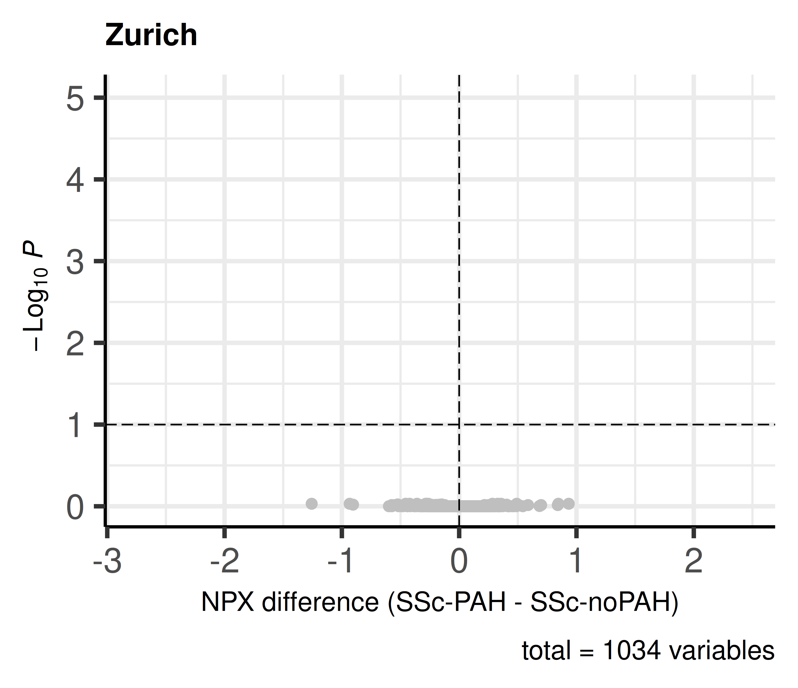
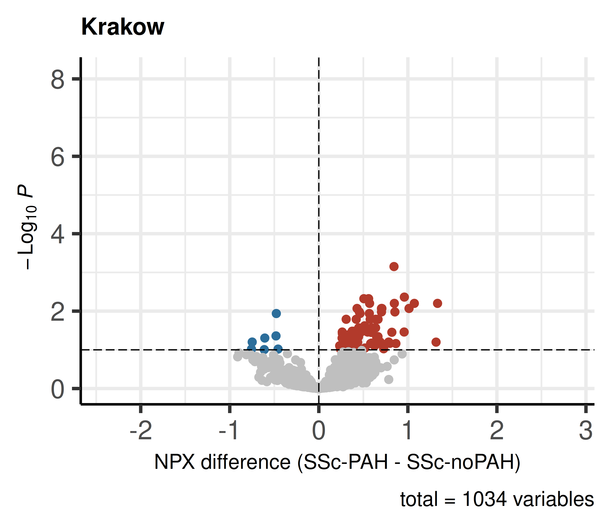
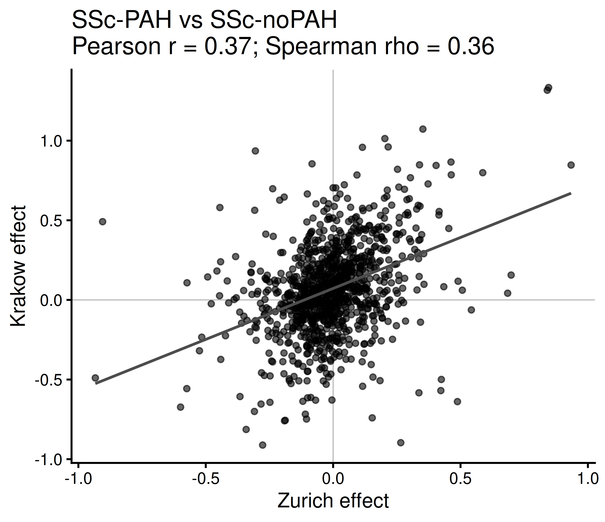
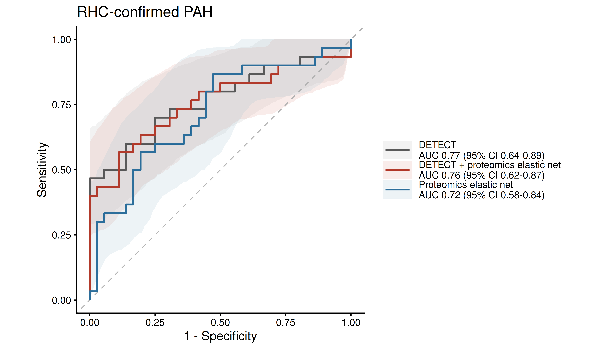
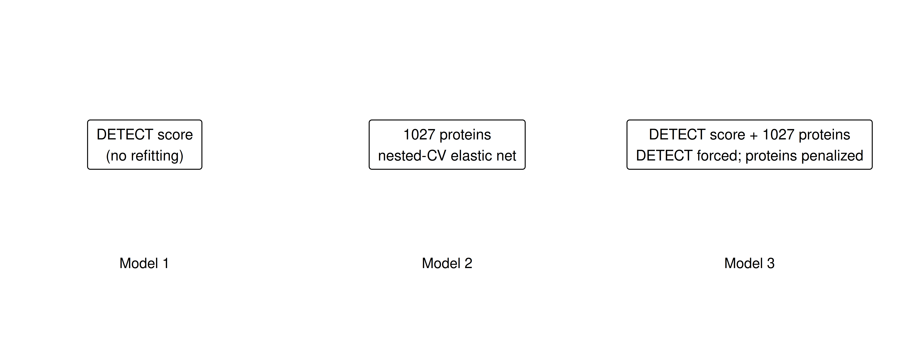
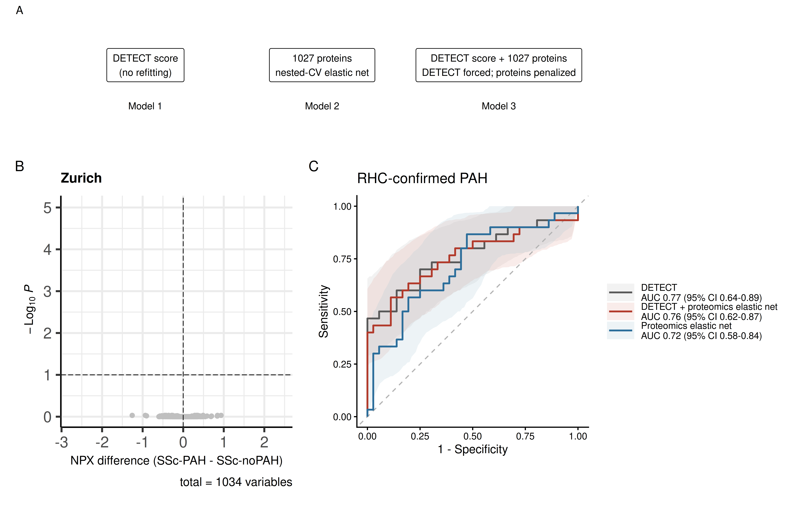
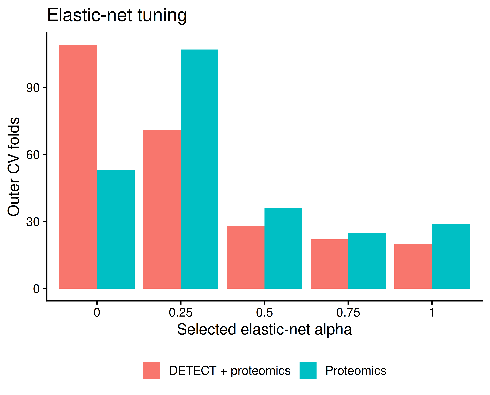
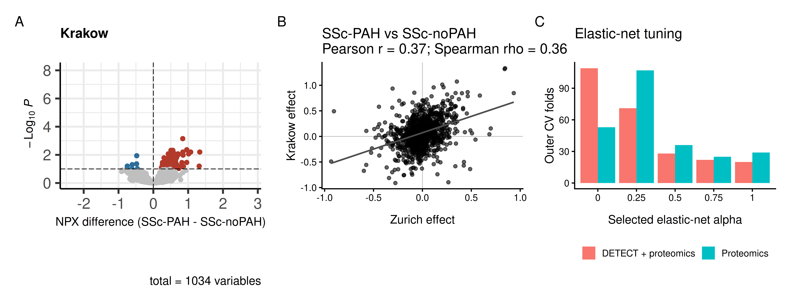

SSc-PAH vs SSc-noPAH - Krakow
meta_p_group <- p_all %>%
filter(!is.na(Group), !is.na(Age), !is.na(Sex)) %>%
mutate(
Group = factor(Group, levels = c("SSc-noPAH", "SSc-PAH")),
Age_z = as.numeric(scale(Age))
) %>%
column_to_rownames("Barcode")
expr_p_group <- as.matrix(data_p[, rownames(meta_p_group), drop = FALSE])
design_p_group <- model.matrix(~ Group + Age_z + Sex, data = meta_p_group)
fit_p_group <- eBayes(lmFit(expr_p_group, design_p_group))
DE_group_p <- topTable(
fit_p_group, coef = "GroupSSc-PAH",
number = Inf, adjust.method = "BH"
) %>% rownames_to_column("Protein")
write.csv(DE_group_p, here::here(output_dir_data, "DE_SScPAH_vs_noPAH_Krakow.csv"), row.names = FALSE)
make_pah_volcano <- function(res, title){
keyvals <- rep("grey75", nrow(res))
names(keyvals) <- rep("Not significant", nrow(res))
keyvals[res$adj.P.Val < 0.1 & res$logFC > 0] <- "#B23A2B"
keyvals[res$adj.P.Val < 0.1 & res$logFC < 0] <- "#2C6E9B"
names(keyvals)[keyvals == "#B23A2B"] <- "Higher in SSc-PAH"
names(keyvals)[keyvals == "#2C6E9B"] <- "Lower in SSc-PAH"
EnhancedVolcano(
res,
lab = res$Protein,
x = "logFC",
y = "adj.P.Val",
labSize = 0,
pointSize = 1.5,
pCutoff = 0.1,
FCcutoff = 0,
colCustom = keyvals,
colAlpha = 1,
subtitle = NULL,
title = title,
xlab = "NPX difference (SSc-PAH - SSc-noPAH)"
) +
theme(
legend.position = "none",
text = element_text(size = 14),
plot.title = element_text(size = 16),
axis.title = element_text(size = 14)
)
}
concordance_group <- inner_join(
DE_group_z %>% select(Protein, effect_z = logFC),
DE_group_p %>% select(Protein, effect_p = logFC),
by = "Protein"
)
pear_group <- cor.test(
concordance_group$effect_z,
concordance_group$effect_p,
method = "pearson"
)
spear_group <- cor.test(
concordance_group$effect_z,
concordance_group$effect_p,
method = "spearman",
exact = FALSE
)
p_volcano_group_z <- make_pah_volcano(DE_group_z, "Zurich")
p_volcano_group_z

ggsave(here::here(output_dir_figs, "Figure5B_Zurich_PAH_noPAH_volcano.png"),
p_volcano_group_z, width = 5.8, height = 5, dpi = 300)
p_volcano_group_p <- make_pah_volcano(DE_group_p, "Krakow")
p_volcano_group_p

ggsave(here::here(output_dir_figs, "SupplementaryFigure6A_Krakow_PAH_noPAH_volcano.png"),
p_volcano_group_p, width = 5.8, height = 5, dpi = 300)
p_concordance_group <- ggplot(concordance_group, aes(effect_z, effect_p)) +
geom_hline(yintercept = 0, linewidth = 0.4, color = "grey75") +
geom_vline(xintercept = 0, linewidth = 0.4, color = "grey75") +
geom_point(size = 1.6, alpha = 0.6) +
geom_smooth(method = MASS::rlm, formula = y ~ x, se = FALSE, linewidth = 0.9, color = "grey30") +
labs(
x = "Zurich effect",
y = "Krakow effect",
title = paste0(
"SSc-PAH vs SSc-noPAH\n",
"Pearson r = ", round(pear_group$estimate, 2),
"; Spearman rho = ", round(spear_group$estimate, 2)
)
) +
theme_classic(base_size = 14)
p_concordance_group

ggsave(here::here(output_dir_figs, "SupplementaryFigure6B_PAH_noPAH_concordance.png"),
p_concordance_group, width = 5.8, height = 5, dpi = 300)
DETECT improvement - nested-CV elastic net
No differential-abundance preselection is used for this analysis.
Proteomics models use all proteins measured in both cohorts. Alpha and
lambda are tuned in the inner cross-validation. For the combined model,
the DETECT score is forced into the model and only protein coefficients
are penalized.
stratified_folds_binary <- function(y, k = 5){
folds <- integer(length(y))
for (lev in sort(unique(y))){
idx <- sample(which(y == lev))
folds[idx] <- rep(seq_len(k), length.out = length(idx))
}
folds
}
specificity_at_sensitivity <- function(y, score, target_sensitivity = 0.95){
ok <- is.finite(y) & is.finite(score)
y <- y[ok]
score <- score[ok]
thresholds <- sort(unique(c(Inf, score, -Inf)), decreasing = TRUE)
out <- lapply(thresholds, function(th){
pred <- ifelse(score >= th, 1, 0)
sens <- sum(pred == 1 & y == 1) / sum(y == 1)
spec <- sum(pred == 0 & y == 0) / sum(y == 0)
c(threshold = th, sensitivity = sens, specificity = spec)
}) %>% do.call(rbind, .) %>% as.data.frame()
out <- out[out$sensitivity >= target_sensitivity, , drop = FALSE]
if (nrow(out) == 0) return(c(threshold = NA, sensitivity = NA, specificity = NA))
best <- out[out$specificity == max(out$specificity), , drop = FALSE]
best <- best[which.max(best$threshold), , drop = FALSE]
unlist(best[1, ])
}
calc_auc <- function(y, score){
as.numeric(pROC::auc(
pROC::roc(y, score, levels = c(0, 1), quiet = TRUE, direction = "<")
))
}
fit_elastic_net_inner <- function(X, y, foldid, alphas = c(0, 0.25, 0.5, 0.75, 1), penalty.factor = NULL){
if (is.null(penalty.factor)){
penalty.factor <- rep(1, ncol(X))
}
fits <- vector("list", length(alphas))
cv_auc <- rep(NA_real_, length(alphas))
for (i in seq_along(alphas)){
fits[[i]] <- try(
cv.glmnet(
X, y,
family = "binomial",
alpha = alphas[i],
foldid = foldid,
type.measure = "auc",
standardize = TRUE,
nlambda = 100,
penalty.factor = penalty.factor
),
silent = TRUE
)
if (!inherits(fits[[i]], "try-error") && any(is.finite(fits[[i]]$cvm))){
cv_auc[i] <- max(fits[[i]]$cvm, na.rm = TRUE)
}
}
if (all(!is.finite(cv_auc))) return(NULL)
best_i <- which.max(cv_auc)
best_fit <- fits[[best_i]]
best_lambda_i <- which.max(best_fit$cvm)
list(
fit = best_fit,
alpha = alphas[best_i],
lambda = best_fit$lambda[best_lambda_i],
cv_auc = best_fit$cvm[best_lambda_i]
)
}
detect_df <- z_all %>%
filter(
Group %in% c("SSc-noPAH", "SSc-PAH"),
!is.na(DETECT_score),
Barcode %in% colnames(data_z)
) %>%
mutate(y = ifelse(Group == "SSc-PAH", 1, 0))
X_detect_prot <- t(as.matrix(data_z[common_proteins, detect_df$Barcode, drop = FALSE]))
y_detect <- detect_df$y
detect_score <- detect_df$DETECT_score
set.seed(1)
R_detect <- 50
K_detect <- 5
alpha_grid <- c(0, 0.25, 0.5, 0.75, 1)
pred_sum_detect <- matrix(
0, nrow = nrow(detect_df), ncol = 3,
dimnames = list(
detect_df$Barcode,
c("DETECT", "Proteomics_elastic_net", "DETECT_plus_proteomics_elastic_net")
)
)
pred_n_detect <- matrix(
0, nrow = nrow(detect_df), ncol = 3,
dimnames = dimnames(pred_sum_detect)
)
detect_tuning_list <- list()
counter_detect <- 1
for (r in seq_len(R_detect)){
outer_folds <- stratified_folds_binary(y_detect, K_detect)
for (f in seq_len(K_detect)){
tr <- which(outer_folds != f)
te <- which(outer_folds == f)
p_detect <- detect_score[te]
inner_k <- min(5, min(table(y_detect[tr])))
if (inner_k < 3) next
inner_fold <- stratified_folds_binary(y_detect[tr], inner_k)
prot_fit <- fit_elastic_net_inner(
X_detect_prot[tr, , drop = FALSE],
y_detect[tr],
foldid = inner_fold,
alphas = alpha_grid
)
X_comb_tr <- cbind(DETECT = detect_score[tr], X_detect_prot[tr, , drop = FALSE])
X_comb_te <- cbind(DETECT = detect_score[te], X_detect_prot[te, , drop = FALSE])
penalty_comb <- c(0, rep(1, ncol(X_detect_prot)))
comb_fit <- fit_elastic_net_inner(
X_comb_tr,
y_detect[tr],
foldid = inner_fold,
alphas = alpha_grid,
penalty.factor = penalty_comb
)
if (is.null(prot_fit) || is.null(comb_fit)) next
p_prot <- as.numeric(
predict(prot_fit$fit$glmnet.fit, newx = X_detect_prot[te, , drop = FALSE],
s = prot_fit$lambda, type = "response")
)
p_comb <- as.numeric(
predict(comb_fit$fit$glmnet.fit, newx = X_comb_te,
s = comb_fit$lambda, type = "response")
)
pred_sum_detect[te, "DETECT"] <- pred_sum_detect[te, "DETECT"] + p_detect
pred_sum_detect[te, "Proteomics_elastic_net"] <- pred_sum_detect[te, "Proteomics_elastic_net"] + p_prot
pred_sum_detect[te, "DETECT_plus_proteomics_elastic_net"] <- pred_sum_detect[te, "DETECT_plus_proteomics_elastic_net"] + p_comb
pred_n_detect[te, ] <- pred_n_detect[te, ] + 1
beta_prot <- as.matrix(coef(prot_fit$fit$glmnet.fit, s = prot_fit$lambda))[-1, 1]
beta_comb <- as.matrix(coef(comb_fit$fit$glmnet.fit, s = comb_fit$lambda))[-1, 1]
beta_comb_proteins <- beta_comb[-1]
detect_tuning_list[[counter_detect]] <- data.frame(
rep_id = r,
fold = f,
proteomics_alpha = prot_fit$alpha,
proteomics_inner_AUC = prot_fit$cv_auc,
proteomics_nonzero = sum(beta_prot != 0),
combined_alpha = comb_fit$alpha,
combined_inner_AUC = comb_fit$cv_auc,
combined_nonzero_proteins = sum(beta_comb_proteins != 0)
)
counter_detect <- counter_detect + 1
}
}
detect_oof <- pred_sum_detect / pred_n_detect
detect_tuning <- bind_rows(detect_tuning_list)
detect_pred_df <- data.frame(
Barcode = detect_df$Barcode,
y = y_detect,
DETECT = detect_oof[, "DETECT"],
Proteomics = detect_oof[, "Proteomics_elastic_net"],
DETECT_plus_proteomics = detect_oof[, "DETECT_plus_proteomics_elastic_net"]
)
write.csv(detect_pred_df, here::here(output_dir_data, "DETECT_repeated_nestedCV_predictions.csv"), row.names = FALSE)
write.csv(detect_tuning, here::here(output_dir_data, "DETECT_elastic_net_tuning.csv"), row.names = FALSE)
detect_tuning %>%
summarise(
proteomics_alpha_median = median(proteomics_alpha),
proteomics_nonzero_median = median(proteomics_nonzero),
combined_alpha_median = median(combined_alpha),
combined_nonzero_proteins_median = median(combined_nonzero_proteins)
)
proteomics_alpha_median proteomics_nonzero_median combined_alpha_median
1 0.25 138 0.25
combined_nonzero_proteins_median
1 143
get_detect_perf <- function(score, model_name){
ss <- specificity_at_sensitivity(y_detect, score, 0.95)
data.frame(
Model = model_name,
AUC = calc_auc(y_detect, score),
Sensitivity = unname(ss["sensitivity"]),
Specificity_at_95_sensitivity = unname(ss["specificity"]),
Threshold = unname(ss["threshold"]),
Negative_RHCs_avoided = round(unname(ss["specificity"]) * sum(y_detect == 0))
)
}
detect_perf <- bind_rows(
get_detect_perf(detect_oof[, "DETECT"], "DETECT"),
get_detect_perf(detect_oof[, "Proteomics_elastic_net"], "Proteomics elastic net"),
get_detect_perf(detect_oof[, "DETECT_plus_proteomics_elastic_net"], "DETECT + proteomics elastic net")
)
set.seed(2)
B_detect <- 2000
boot_detect <- vector("list", B_detect)
for (b in seq_len(B_detect)){
idx <- sample(seq_len(nrow(detect_df)), replace = TRUE)
yb <- y_detect[idx]
if (length(unique(yb)) < 2) next
vals <- lapply(
c("DETECT", "Proteomics_elastic_net", "DETECT_plus_proteomics_elastic_net"),
function(m){
sc <- detect_oof[idx, m]
ss <- specificity_at_sensitivity(yb, sc, 0.95)
c(AUC = calc_auc(yb, sc), Spec95 = unname(ss["specificity"]))
}
)
boot_detect[[b]] <- data.frame(
DETECT_AUC = vals[[1]]["AUC"],
Proteomics_AUC = vals[[2]]["AUC"],
Combined_AUC = vals[[3]]["AUC"],
DETECT_Spec95 = vals[[1]]["Spec95"],
Proteomics_Spec95 = vals[[2]]["Spec95"],
Combined_Spec95 = vals[[3]]["Spec95"]
)
}
boot_detect <- bind_rows(boot_detect)
detect_ci <- data.frame(
Model = c("DETECT", "Proteomics elastic net", "DETECT + proteomics elastic net"),
AUC_low = c(
quantile(boot_detect$DETECT_AUC, 0.025, na.rm = TRUE),
quantile(boot_detect$Proteomics_AUC, 0.025, na.rm = TRUE),
quantile(boot_detect$Combined_AUC, 0.025, na.rm = TRUE)
),
AUC_high = c(
quantile(boot_detect$DETECT_AUC, 0.975, na.rm = TRUE),
quantile(boot_detect$Proteomics_AUC, 0.975, na.rm = TRUE),
quantile(boot_detect$Combined_AUC, 0.975, na.rm = TRUE)
),
Spec95_low = c(
quantile(boot_detect$DETECT_Spec95, 0.025, na.rm = TRUE),
quantile(boot_detect$Proteomics_Spec95, 0.025, na.rm = TRUE),
quantile(boot_detect$Combined_Spec95, 0.025, na.rm = TRUE)
),
Spec95_high = c(
quantile(boot_detect$DETECT_Spec95, 0.975, na.rm = TRUE),
quantile(boot_detect$Proteomics_Spec95, 0.975, na.rm = TRUE),
quantile(boot_detect$Combined_Spec95, 0.975, na.rm = TRUE)
)
)
detect_perf <- left_join(detect_perf, detect_ci, by = "Model")
detect_delta <- data.frame(
Comparison = c(
"Proteomics elastic net - DETECT",
"DETECT + proteomics elastic net - DETECT"
),
Delta_AUC = c(
mean(boot_detect$Proteomics_AUC - boot_detect$DETECT_AUC, na.rm = TRUE),
mean(boot_detect$Combined_AUC - boot_detect$DETECT_AUC, na.rm = TRUE)
),
AUC_low = c(
quantile(boot_detect$Proteomics_AUC - boot_detect$DETECT_AUC, 0.025, na.rm = TRUE),
quantile(boot_detect$Combined_AUC - boot_detect$DETECT_AUC, 0.025, na.rm = TRUE)
),
AUC_high = c(
quantile(boot_detect$Proteomics_AUC - boot_detect$DETECT_AUC, 0.975, na.rm = TRUE),
quantile(boot_detect$Combined_AUC - boot_detect$DETECT_AUC, 0.975, na.rm = TRUE)
),
Delta_Spec95 = c(
mean(boot_detect$Proteomics_Spec95 - boot_detect$DETECT_Spec95, na.rm = TRUE),
mean(boot_detect$Combined_Spec95 - boot_detect$DETECT_Spec95, na.rm = TRUE)
),
Spec95_low = c(
quantile(boot_detect$Proteomics_Spec95 - boot_detect$DETECT_Spec95, 0.025, na.rm = TRUE),
quantile(boot_detect$Combined_Spec95 - boot_detect$DETECT_Spec95, 0.025, na.rm = TRUE)
),
Spec95_high = c(
quantile(boot_detect$Proteomics_Spec95 - boot_detect$DETECT_Spec95, 0.975, na.rm = TRUE),
quantile(boot_detect$Combined_Spec95 - boot_detect$DETECT_Spec95, 0.975, na.rm = TRUE)
)
)
detect_perf
Model AUC Sensitivity
1 DETECT 0.7699074 0.9666667
2 Proteomics elastic net 0.7166667 0.9666667
3 DETECT + proteomics elastic net 0.7564815 0.9666667
Specificity_at_95_sensitivity Threshold Negative_RHCs_avoided AUC_low
1 0.0000000 26.55923473 0 0.6372200
2 0.1111111 0.15772006 4 0.5811905
3 0.0000000 0.02741873 0 0.6211324
AUC_high Spec95_low Spec95_high
1 0.8860362 0 0.5000000
2 0.8382616 0 0.5833333
3 0.8731842 0 0.5000000
detect_delta
Comparison Delta_AUC AUC_low AUC_high
1 Proteomics elastic net - DETECT -0.05332520 -0.18474571 0.07694422
2 DETECT + proteomics elastic net - DETECT -0.01335563 -0.06990931 0.04194772
Delta_Spec95 Spec95_low Spec95_high
1 0.04222488 -0.3888889 0.3421053
2 -0.02001443 -0.2857143 0.1600541
write.csv(detect_perf, here::here(output_dir_data, "TableS7_DETECT_model_performance.csv"), row.names = FALSE)
write.csv(detect_delta, here::here(output_dir_data, "TableS7_DETECT_incremental_performance.csv"), row.names = FALSE)
detect_roc_bands <- bind_rows(
roc_bootstrap_band(
y_detect,
detect_oof[, "DETECT"],
B = 2000,
seed = 501
) %>% mutate(Model = "DETECT"),
roc_bootstrap_band(
y_detect,
detect_oof[, "Proteomics_elastic_net"],
B = 2000,
seed = 502
) %>% mutate(Model = "Proteomics elastic net"),
roc_bootstrap_band(
y_detect,
detect_oof[, "DETECT_plus_proteomics_elastic_net"],
B = 2000,
seed = 503
) %>% mutate(Model = "DETECT + proteomics elastic net")
)
roc_detect_df <- bind_rows(
roc_curve_df(y_detect, detect_oof[, "DETECT"]) %>% mutate(Model = "DETECT"),
roc_curve_df(y_detect, detect_oof[, "Proteomics_elastic_net"]) %>% mutate(Model = "Proteomics elastic net"),
roc_curve_df(y_detect, detect_oof[, "DETECT_plus_proteomics_elastic_net"]) %>% mutate(Model = "DETECT + proteomics elastic net")
)
auc_labels <- detect_perf %>% mutate(Label = paste0(Model, "\nAUC ", sprintf("%.2f", AUC), " (95% CI ", sprintf("%.2f", AUC_low), "-", sprintf("%.2f", AUC_high), ")")) %>% select(Model, Label)
roc_detect_df <- roc_detect_df %>% left_join(auc_labels, by = "Model")
detect_roc_bands_plot <- detect_roc_bands %>% left_join(auc_labels, by = "Model")
roc_cols <- c("DETECT" = "grey35", "Proteomics elastic net" = "#2C6E9B", "DETECT + proteomics elastic net" = "#B23A2B")
roc_fills <- c("DETECT" = "grey75", "Proteomics elastic net" = "#A8C5D5", "DETECT + proteomics elastic net" = "#E5A49A")
line_values <- setNames(roc_cols[auc_labels$Model], auc_labels$Label)
fill_values <- setNames(roc_fills[auc_labels$Model], auc_labels$Label)
p_detect_roc <- ggplot() +
geom_ribbon(data = detect_roc_bands_plot, aes(x = FPR, ymin = lower, ymax = upper, fill = Label), alpha = 0.20) +
geom_abline(slope = 1, intercept = 0, linetype = 2, color = "grey70") +
geom_step(data = roc_detect_df, aes(FPR, Sensitivity, color = Label), direction = "hv", linewidth = 1.0) +
scale_color_manual(values = line_values) + scale_fill_manual(values = fill_values) + coord_equal() +
labs(x = "1 - Specificity", y = "Sensitivity", color = NULL, fill = NULL, title = "RHC-confirmed PAH") +
theme_classic(base_size = 14) +
theme(legend.position = "right", legend.direction = "vertical", legend.text = element_text(size = 11), legend.key.width = unit(1.2, "cm"), legend.spacing.y = unit(0.35, "cm")) +
guides(color = guide_legend(ncol = 1, byrow = TRUE), fill = guide_legend(ncol = 1, byrow = TRUE))
p_detect_roc

ggsave(here::here(output_dir_figs, "Figure5C_DETECT_ROC.png"), p_detect_roc, width = 9.5, height = 5.5, dpi = 300)
detect_scheme_df <- data.frame(
x = c(1.2, 4.7, 8.2),
y = c(1, 1, 1),
label = c(
"DETECT score\n(no refitting)",
paste0(length(common_proteins), " proteins\nnested-CV elastic net"),
paste0(
"DETECT score + ", length(common_proteins),
" proteins\nDETECT forced; proteins penalized"
)
)
)
p_detect_scheme <- ggplot(detect_scheme_df, aes(x, y, label = label)) +
geom_label(
size = 4.1,
fill = "white",
label.size = 0.35,
label.padding = unit(0.5, "lines")
) +
annotate(
"text",
x = c(1.2, 4.7, 8.2),
y = 0.45,
label = c("Model 1", "Model 2", "Model 3"),
size = 4.0
) +
xlim(0, 9.5) +
ylim(0.15, 1.6) +
theme_void()
p_detect_scheme

ggsave(here::here(output_dir_figs, "Figure5A_DETECT_scheme.png"),
p_detect_scheme, width = 10, height = 3.8, dpi = 300)
Figure5 <- p_detect_scheme / (p_volcano_group_z | p_detect_roc) + plot_layout(heights = c(0.62, 1.38), widths = c(0.85, 1.15)) + plot_annotation(tag_levels = "A")
Figure5

ggsave(here::here(output_dir_figs, "Figure5_panel_DETECT.png"), Figure5, width = 13, height = 8.5, dpi = 300)
detect_alpha_long <- bind_rows(
detect_tuning %>% transmute(Model = "Proteomics", alpha = proteomics_alpha),
detect_tuning %>% transmute(Model = "DETECT + proteomics", alpha = combined_alpha)
)
p_detect_alpha <- ggplot(detect_alpha_long, aes(factor(alpha), fill = Model)) +
geom_bar(position = "dodge") +
labs(
x = "Selected elastic-net alpha",
y = "Outer CV folds",
fill = NULL,
title = "Elastic-net tuning"
) +
theme_classic(base_size = 14) +
theme(legend.position = "bottom")
p_detect_alpha

ggsave(here::here(output_dir_figs, "SupplementaryFigure6C_elastic_net_alpha.png"),
p_detect_alpha, width = 6.2, height = 5, dpi = 300)
SupplementaryFigure6 <- p_volcano_group_p | p_concordance_group | p_detect_alpha
SupplementaryFigure6 <- SupplementaryFigure6 + plot_annotation(tag_levels = "A")
SupplementaryFigure6

ggsave(here::here(output_dir_figs, "SupplementaryFigure6_DETECT_supporting.png"),
SupplementaryFigure6, width = 13, height = 5, dpi = 300)